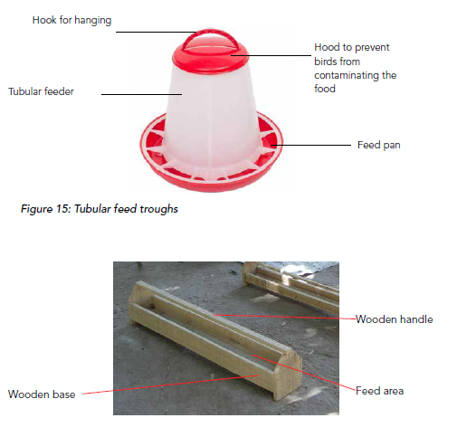
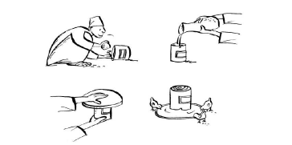
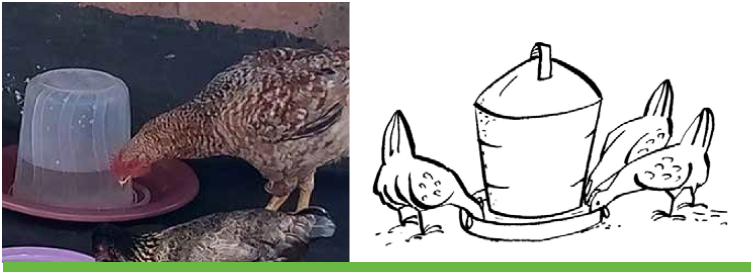

ຜູ້ໃຫ້ອາຫານແລະເຄື່ອງດື່ມ
- Feeders ແລະເຄື່ອງດື່ມແມ່ນຄ້າຍຄືກັນ, ບໍ່ວ່າຈະຖືກນໍາໃຊ້ໃນຂອບເຂດຟຣີ, ການປັບປຸງລະບົບ freerange ຫຼືລະບົບຈໍາກັດຂະຫນາດນ້ອຍ. ພວກມັນອາດຈະເປັນເສັ້ນຫຼືທໍ່

ທໍ່ອາຫານເສັ້ນຊື່. ດ້າມຈັບຫມູນວຽນປ້ອງກັນບໍ່ໃຫ້ນົກ roosting ແລະ defecation ໃນ feeder ໄດ້
- ຜູ້ໃຫ້ອາຫານ ແລະ ເຄື່ອງດື່ມຄວນຮັກສາຄວາມສະອາດຢູ່ສະເໝີ ເພື່ອປ້ອງກັນການແຜ່ລະບາດຂອງພະຍາດ.
- ພວກມັນຄວນຈະໃຫຍ່ພໍສໍາລັບໄກ່ຫຼາຍໂຕທີ່ຈະລ້ຽງໃນເວລາດຽວກັນ. ທໍ່ອາຫານເສັ້ນຍາວ 1 ແມັດ ຫຼື ເສັ້ນຜ່າສູນກາງ 35 ຊມ ແມ່ນໃຫຍ່ພໍໃຫ້ນົກຜູ້ໃຫຍ່ 20 ໂຕກິນໄດ້. ເສັ້ນຜ່າສູນກາງທີ່ຄ້າຍຄືກັນຂອງຜູ້ດື່ມແມ່ນພຽງພໍສໍາລັບ 40 ໄກ່ທີ່ຈະດື່ມ.
- ເຄື່ອງປ້ອນສາມາດກໍ່ສ້າງຢູ່ໃນທ້ອງຖິ່ນເປັນກິດຈະກໍາໃນກຸ່ມຊາວກະສິກອນ. feeder ຄວນມີຢ່າງຫນ້ອຍການວັດແທກດັ່ງຕໍ່ໄປນີ້:
- 2 ຊຕມຕໍ່ chick ຕາມຂ້າງຫນຶ່ງຂອງ feeder ເສັ້ນ
- 5cm ຕໍ່ນົກສໍາລັບຜູ້ປູກແລະ
- 12cm ຕໍ່ນົກສໍາລັບໄກ່ຜູ້ໃຫຍ່.
- ພວກເຂົາຄວນຈະຖືກສ້າງຂື້ນເພື່ອຕອບສະຫນອງຄວາມຕ້ອງການດັ່ງຕໍ່ໄປນີ້:
- ງ່າຍທີ່ຈະເຮັດຄວາມສະອາດແລະຕື່ມຂໍ້ມູນໃສ່.
- ມັນບໍ່ຄວນອະນຸຍາດໃຫ້ມີການຮົ່ວໄຫຼຂອງອາຫານຫຼືການສູນເສຍນ້ໍາ.
- ມັນບໍ່ຄວນອະນຸຍາດໃຫ້ມີການປົນເປື້ອນຂອງອາຫານໂດຍການລຸດລົງ (faecal matter).

ວິທີການເຮັດເຄື່ອງປ້ອນ ແລະເຄື່ອງດື່ມໃນທ້ອງຖິ່ນ
- ເຄື່ອງໃຫ້ອາຫານ ແລະເຄື່ອງດື່ມອາດຈະຖືກຜະລິດອອກຈາກວັດສະດຸທ້ອງຖິ່ນໄດ້ຢ່າງງ່າຍດາຍ. ຕົວຢ່າງ, ກົ່ວເປົ່າທີ່ວາງລົງເທິງຈານປະກອບເປັນເຄື່ອງດື່ມທີ່ດີ. ໂດຍການເຮັດໃຫ້ກົ່ວຫົດຕົວລົງ, ທ່ານຫຼີກລ້ຽງຝຸ່ນທີ່ປົນເປື້ອນນ້ໍາ (ຮູບ 17, 18 ແລະ 19).
- ການເຮັດໃຫ້ຜູ້ດື່ມ:
- ທ່ານເລີ່ມຕົ້ນໂດຍການເຮັດໃຫ້ສອງຮູຂະຫນາດນ້ອຍຢູ່ໃກ້ກັບເສັ້ນຂວາງກັບກັນແລະກັນ.
- ຖອກນ້ໍາສະອາດໃສ່ກະປ໋ອງ.
- ເອົາແຜ່ນຮາບພຽງທີ່ມີຂອບຂະຫນາດນ້ອຍຢູ່ເທິງແລະຫັນກົ່ວແລະແຜ່ນ upside ລົງ, ໃນຂະນະທີ່ກົດດັນໃຫ້ກັນແລະກັນ.
- ຄ່ອຍໆວາງຜູ້ດື່ມລົງພື້ນ. ຂອບຂອງຈານຄວນຕ່ຳພໍໃຫ້ນົກນ້ອຍດື່ມໄດ້, ແຕ່ຍັງສູງພໍສຳລັບນົກໂຕໃຫຍ່ທີ່ຈະຈຸ່ມ wattles ຂອງມັນເພື່ອເຮັດໃຫ້ພວກມັນເຢັນໃນຊ່ວງອາກາດຮ້ອນ.

- ຜູ້ດື່ມອາດຈະໄດ້ຮັບການປັບປຸງໃນທ້ອງຖິ່ນຈາກ jerrycans ໂດຍການຕັດສອງແຖບເພື່ອສ້າງການເປີດຫນຶ່ງຂອງກວ້າງແລະປິດຝາ. ການເປີດຄວນອະນຸຍາດໃຫ້ຫົວຂອງນົກຜ່ານເພື່ອດື່ມນ້ໍາ. ວາງ jerrycan ຢູ່ດ້ານກົງກັນຂ້າມທີ່ບໍ່ໄດ້ຖືກຕັດແລະຕື່ມນ້ໍາ.
- ເຄື່ອງດື່ມບໍ່ຄວນເລິກເກີນໄປສໍາລັບລູກໄກ່ທີ່ຈະເຂົ້າເຖິງນ້ໍາແລະບໍ່ຄວນປ່ອຍໃຫ້ນ້ໍາຮົ່ວໃນຂີ້ເຫຍື້ອ. ຜູ້ດື່ມສໍາລັບລູກໄກ່ຄວນຈະຕື້ນເພື່ອຫຼີກເວັ້ນການຈົມນ້ໍາ.
- ເຄື່ອງປ້ອນ ແລະເຄື່ອງດື່ມທາງການຄ້າອາດຈະຊື້ຢູ່ຕະຫຼາດ, ບໍ່ວ່າຈະເປັນປະເພດໂລຫະ ຫຼື ພາດສະຕິກ (ຮູບທີ 17). ພວກມັນມັກຈະມີລາຄາແພງ ແລະປົກກະຕິບໍ່ດີກວ່າເຄື່ອງປ້ອນ ຫຼືເຄື່ອງດື່ມທີ່ຜະລິດໃນທ້ອງຖິ່ນ.

- ເຄື່ອງປ້ອນເສັ້ນແມ່ນເຮັດໄດ້ງ່າຍຈາກໄມ້, ແຜ່ນເຫຼັກຫຼືດິນເຜົາ. ເຄື່ອງປ້ອນໂລຫະແມ່ນງ່າຍທີ່ຈະເຮັດຄວາມສະອາດແລະຂ້າເຊື້ອ. ທໍ່ອາຫານໄມ້ມີລາຄາຖືກແຕ່ຍາກທີ່ຈະຂ້າເຊື້ອ.
- ມັນເປັນສິ່ງ ສຳ ຄັນທີ່ເຄື່ອງປ້ອນອາຫານຖືກສ້າງຂື້ນເພື່ອຫລີກລ້ຽງສິ່ງເສດເຫຼືອຂອງອາຫານ. ນອກຈາກນັ້ນ, ສິ່ງເສດເຫຼືອຂອງອາຫານສາມາດຫຼຸດລົງໄດ້ຖ້າຫາກວ່າ feeders ບໍ່ໄດ້ເຕີມລົງໄປເທິງ. ມັນດີກວ່າທີ່ຈະຕື່ມຂໍ້ມູນໃສ່ເຄື່ອງປ້ອນພຽງແຕ່ເຄິ່ງຫນຶ່ງເຕັມແລະຫຼັງຈາກນັ້ນກວດເບິ່ງພວກມັນເປັນປົກກະຕິສໍາລັບການຕື່ມຂໍ້ມູນ.
- ເຄື່ອງປ້ອນເສັ້ນຊື່ຄວນມີແຖບໝຸນຢູ່ດ້ານເທິງເພື່ອປ້ອງກັນນົກຈາກການຖອກທ້ອງ ແລະ ຖ່າຍອາຈົມຢູ່ໃນອາຫານ. ແຖບດັ່ງກ່າວຍັງຈໍາກັດພື້ນທີ່ທີ່ມີຫນ້າດິນຂອງອາຫານແລະເພື່ອປ້ອງກັນບໍ່ໃຫ້ນົກເຂົ້າໄປໃນ feeders ແລະເຮັດໃຫ້ເກີດຄວາມສູນເສຍໂດຍການຂູດ. ຕົວຢ່າງເພີ່ມເຕີມຂອງວິທີການເຮັດໃຫ້ເຄື່ອງປ້ອນເສັ້ນຊື່ແລະການນໍາໃຊ້ຂອງພວກມັນແມ່ນສະແດງຢູ່ໃນຮູບຂ້າງລຸ່ມນີ້


Perches
- Perches ແມ່ນສໍາຄັນສໍາລັບໄກ່ທີ່ຈະພັກຜ່ອນໃນຕອນກາງຄືນ. Perches ເຮັດໃຫ້ໄກ່ປອດໄພ, ເຊັ່ນດຽວກັນກັບພວກເຂົາເຈົ້າຈະນອນຢູ່ໃນຕົ້ນໄມ້ໃນທໍາມະຊາດ.
- Perches ຍັງຈະຊ່ວຍໃຫ້ໄກ່ຮັກສາຕີນຂອງພວກເຂົາສະອາດ, ເພາະວ່າພວກມັນຈະບໍ່ເຮັດໃຫ້ຕີນເປື້ອນຢູ່ໃນການຫຼຸດລົງຂອງມັນ. ນອກຈາກນັ້ນ, ໄຂ່ຈະສະອາດກວ່າເພາະວ່າໄກ່ຈະມີຂາທີ່ສະອາດກວ່າເມື່ອມັນເຂົ້າໄປໃນຮັງ
- ແມ່ກາຝາກອາດຈະທໍາຮ້າຍສັດປີກທີ່ພັກຜ່ອນຢູ່ໃນພື້ນເຮືອນ, ແລະ perches ມັກຈະຫຼຸດຜ່ອນຄວາມສ່ຽງຂອງແມ່ກາຝາກພາຍນອກເຂົ້າມາໃນຂົນໃນຕອນກາງຄືນ.
- ເພື່ອປ້ອງກັນການໂຈມຕີຂອງແມ່ກາຝາກພາຍນອກ, perches ອາດຈະຖືກປະຕິບັດດ້ວຍນ້ໍາມັນຫຼືນໍ້າມັນ, ບ່ອນທີ່ perch ພົບກັບກໍາແພງ.
- ແຕ່ລະ perch ຄວາມຍາວຫນຶ່ງແມັດສາມາດລ້ຽງນົກຜູ້ໃຫຍ່ຫ້າໂຕ.
- Perches ແມ່ນດີທີ່ສຸດເຮັດດ້ວຍໄມ້ໄຜ່ຫຼືໄມ້ກົມເພື່ອຮອງຮັບຂະຫນາດແລະໂຄງສ້າງຂອງຕີນຂອງນົກ. ພວກມັນບໍ່ຄວນບາງຫຼືຫນາເກີນໄປ. ຖ້າໄມ້ໃຫຍ່ຫຼືນ້ອຍເກີນໄປ, ນົກອາດຈະຕົກລົງ.

ຮັງ
ໃນຫຼາຍບ້ານ, ບໍ່ໄດ້ສະໜອງຮັງໃຫ້ແມ່ໄກ່ ແລະ ໃນທີ່ສຸດ ໄກ່ຈະວາງໄຂ່ຢູ່ເທິງໜ້າດິນ ຫຼື ຢູ່ໃນພຸ່ມໄມ້, ບ່ອນທີ່ພວກມັນຫາໄດ້ຍາກ. ຜູ້ລ້ຽງສັດປີກບາງຄົນສ້າງຮັງຢູ່ເທິງພື້ນດິນນອກເຮືອນໄກ່. ອັນນີ້ຄວນຫຼີກລ່ຽງ, ເພາະວ່າໄຂ່ຢູ່ນອກເຮືອນຈະປະເຊີນກັບຜູ້ລ້າ ແລະໂຈນ. ຮູບທີ 25 ສະແດງຮັງທີ່ມີໄຂ່ຢູ່ນອກເຮືອນຄົວ.

ຮັງຫ້ອຍຢູ່ເທິງ varenda ຢູ່ນອກເຮືອນໃນເມືອງ Amuru. ໄກ່ແມ່ນ incubating ໄຂ່ແຕ່ບາງໄຂ່ໄດ້ຖືກສໍາຜັດກັບອາກາດເຢັນໂດຍຜ່ານຮັງທີ່ແຕກຫັກ (ລູກສອນ). ອັນນີ້ຈະເຮັດໃຫ້ໄຂ່ບາງຊະນິດບໍ່ແຕກອອກ
- ຄວນວາງຮັງຢູ່ໃນເຮືອນໄກ່ ແລະມັກຢູ່ເໜືອໜ້າດິນ.
- ຮັງສໍາລັບການລ້ຽງຕ້ອງເປັນຮັງສ່ວນບຸກຄົນ, ເຊິ່ງໃຊ້ເວລາພຽງແຕ່ຫນຶ່ງນົກເທົ່ານັ້ນ. ຮັງຄວນຖືກວາງໄວ້ໃນບ່ອນທີ່ງຽບສະຫງົບ, ຢູ່ເທິງພື້ນເຮືອນຫຼືຍົກຂຶ້ນມາຂ້າງເທິງພື້ນດິນເພື່ອຫຼີກເວັ້ນການປຽກຊຸ່ມແລະພວກມັນຕ້ອງເອົາອອກໄດ້ງ່າຍ. ເມື່ອ hen broody ມັນເປັນສິ່ງຈໍາເປັນທີ່ຈະເອົາມັນໄປບ່ອນອື່ນ, ເຊັ່ນ, ໄປຫ້ອງອື່ນ, ເພື່ອຫຼີກເວັ້ນການ hens ອື່ນໆລົບກວນນາງ, ຫຼືແມ້ກະທັ້ງໄປ broody ເຊັ່ນດຽວກັນ.

ຮັງສໍາລັບ hens broody ຄວນຖືກຈັດໃສ່ໃນບ່ອນທີ່ງຽບ
- ຮັງທີ່ງ່າຍດາຍອາດຈະເປັນ ໝໍ້ດິນເຜົາ, ກະປ໋ອງຫຼືກະຕ່າທີ່ເຮັດດ້ວຍເສັ້ນໃຍທ້ອງຖິ່ນ, ແຜ່ນແຂງ, ຫຼືກ່ອງໄມ້, ກະຕ່າຕັດ, ອ່າງເກັບນໍ້າຫຼືການຂຸດຂຸມຕື້ນ.
- ຮັງຄວນມີຂະໜາດທີ່ເໝາະສົມເພື່ອໃຫ້ໄກ່ຮູ້ສຶກສະດວກສະບາຍ. ປົກກະຕິແລ້ວກ່ອງຮັງຈະວັດແທກ 30 x 30 x 30 ຊຕມ. ຢ່າເຮັດໃຫ້ພວກມັນໃຫຍ່ເກີນໄປ, ເພາະວ່າໄກ່ຈະບໍ່ສະບາຍ. ກະຕ່າ ຫຼື ກະຕ່າຮັງສາມາດວັດແທກໄດ້ 40 x 20 x 25 ຊມ (ເສັ້ນຜ່າກາງເທິງ x ສູງ x ເສັ້ນຜ່າກາງຕ່ໍາ). ຫມໍ້ດິນເຜົາ, ຫຼາຍຫຼືຫນ້ອຍຄືກັນ.

ຮັງທີ່ງ່າຍດາຍສໍາລັບ hens broody ຄວນໄດ້ຮັບການຂົນສົ່ງໄດ້ງ່າຍ
ຮັງທີ່ງ່າຍດາຍ ແລະ ດຶງດູດໃຈສໍາລັບແມ່ໄກ່ ອາດຈະຖືກກະກຽມໂດຍປະຕິບັດຕາມສາມຂັ້ນຕອນນີ້:
- ໃຫ້ແນ່ໃຈວ່າຫມໍ້ຫຼືກະຕ່າສະອາດແລະແຫ້ງ;
- ຕື່ມດິນຊາຍປະສົມກັບຂີ້ເຖົ່າເຖິງ 1/3 ຂອງຄວາມເລິກ;
- ເອົາວັດສະດຸເຮັດຮັງທີ່ສະອາດ, ອ່ອນໆ (ຫຍ້າ ຫຼື ເຟືອງ) ຢູ່ເທິງສຸດເຖິງ 2/3 ຂອງຄວາມເລິກ.
ດິນຊາຍຢູ່ທາງລຸ່ມຂອງຮັງຄວນໄດ້ຮັບການປົກຫຸ້ມດ້ວຍຂີ້ເຫຍື້ອອ່ອນພຽງພໍປະມານ 5-8 ຊມ. ຂີ້ເຫຍື້ອອາດຈະເປັນເຄື່ອງນຸ່ງເກົ່າ, ຝ້າຍ, ຫຍ້າແຫ້ງ, ກາບກາເຟ, ແລະອຸປະກອນອື່ນໆທີ່ອ່ອນໂຍນທີ່ບໍ່ມີຄວາມຊຸ່ມຊື່ນ.
- ການປະສົມຂີ້ເຖົ່າ, ໃບຢາສູບ ຫຼື ສານຕ້ານກາຝາກອື່ນໆກັບອຸປະກອນການຮັງຈະຮັກສາແມ່ກາຝາກພາຍນອກຫຼາຍທີ່ສຸດ. ແມ່ກາຝາກພາຍນອກຢູ່ໃນຮັງອາດຈະຫຼຸດຜ່ອນຄວາມສາມາດໃນການ hatch ຂອງໄຂ່ໄດ້, ຍ້ອນວ່າມັນລະຄາຍເຄືອງຮັງຂອງໄກ່ແລະມັນອອກຈາກຮັງໄປແລະຂູດຕົວມັນເອງເລື້ອຍໆ, ເຮັດໃຫ້ໄຂ່ເຢັນ.
- ສໍາລັບການວາງ hens ຫຼາຍ, ທ່ານອາດຈະມີຫມໍ້ໄຟຂອງຮັງບ່ອນທີ່ hens ຫຼາຍສາມາດວາງໄດ້ໃນແຕ່ລະຄັ້ງ. ກ່ອງຮັງທີ່ເຮັດດ້ວຍໄມ້ເຊັ່ນໃນຮູບ 29 ສາມາດກໍ່ສ້າງໄດ້. ຍາວ 30 ຊມ, ກວ້າງ 30 ຊມ, ສູງ 25 ຊມ. ຂຸມຫຼື cage ໃນຮັງນີ້ເຫມາະສົມກັບນົກ.
ຫມໍ້ໄຟຂອງຮັງສ່ວນບຸກຄົນ. ຫນຶ່ງຢູ່ເບື້ອງຊ້າຍມີທາງເຂົ້າກວ້າງໃນຂະນະທີ່ທາງເຂົ້າຂອງທາງຂວາຖືກຫຼຸດລົງ